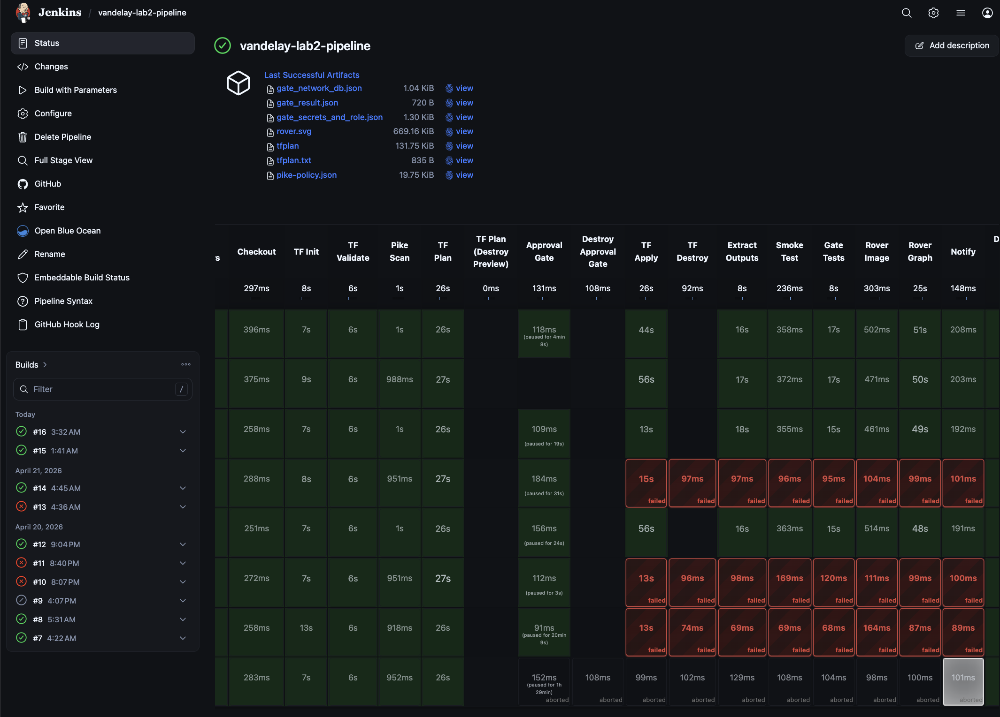
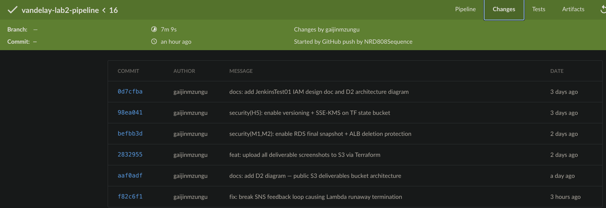
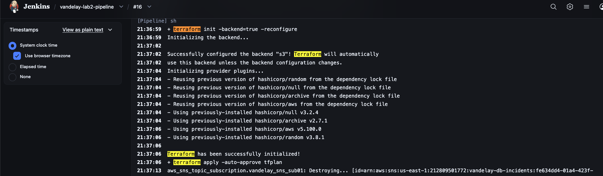
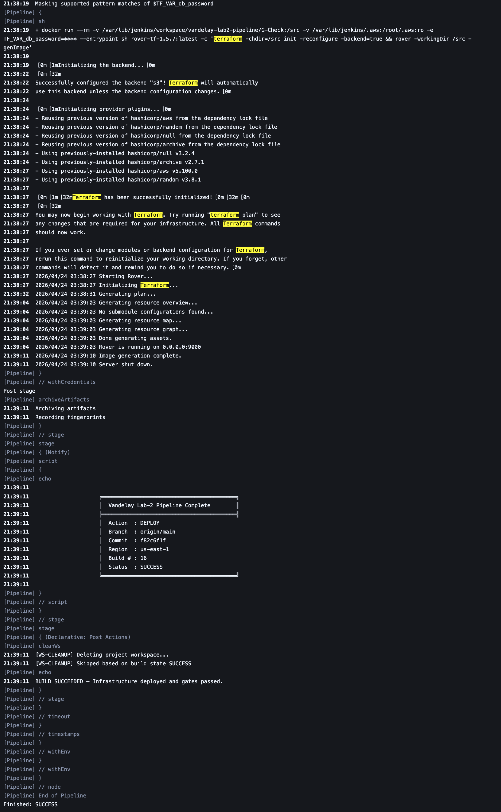

G-Check Pipeline — vandelay-lab2-pipeline
12-stage declarative pipeline: Checkout → TF Init → Validate → Plan → Approval → Apply → Outputs → Smoke Test → Gate Tests → Rover Image → Rover Graph → Notify

Stage ViewAll 12 stages — build result

Blue Ocean ViewPipeline visualization

Pipeline Steps 1Step detail — early stages

Pipeline Steps 2Step detail — gate + notify stages

Terraform InitS3 backend initialized

Terraform PlanNo changes — infrastructure stable
▢
Jenkins → vandelay-lab2-pipeline → build history (classic view)
Classic View — PENDINGBuild history list
▢
Jenkins → last successful build → Console Output
Console Output — PENDINGFull successful run output
▢
Jenkins → build → Build Artifacts (artifact list page)
Build Artifacts Page — PENDINGArchived artifacts list